커피 프레스는 물에 침지 된 원두의 맛과 향이 충분히 추출되어, 원두 본연의 풍미와 커피의 오일리함을 풍성하게 느낄 수 있습니다.
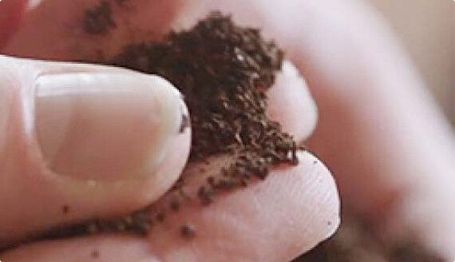
바다 소금 크기로 굵게 그라인딩 된 커피를 프레스에 넣고, 물 6온스 당
커피 2테이블 스푼을 계랑해서 넣어주세요.
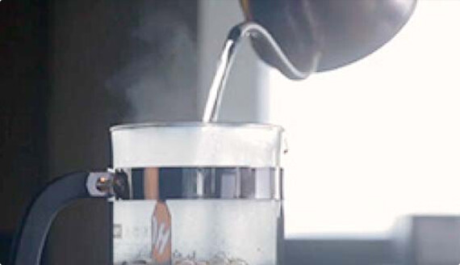
갓 끓인 뜨거운 물을 프레스에 채워주세요. 그라인딩 된 커피를 모두 적셔주세요.
최상의 풍미를 내려면 필터로 여과한 물이나 생수를 사용하세요.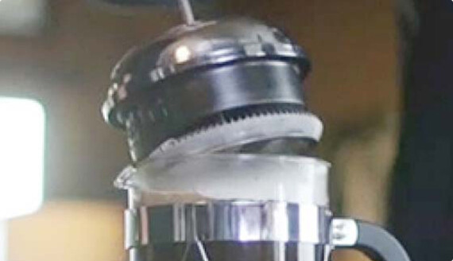
플런저를 프레스 위에 올려놓고 4분간 커피를 추출하세요.
이때 플런저를 아래로 누르지 마세요.
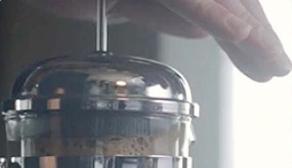
플런저가 프레스 바닥에 닿을 때까지 천천히 아래로 눌러주세요.
그리고 커피를 즐기면 됩니다.
푸어 오버로 추출한 드립 커피는 부드럽고 깨끗한 풍미, 은은한 매력을 느낄 수 있고, 물을 멈추지 않고 부어 누구나 쉽고 간편하게 만들 수 있습니다.
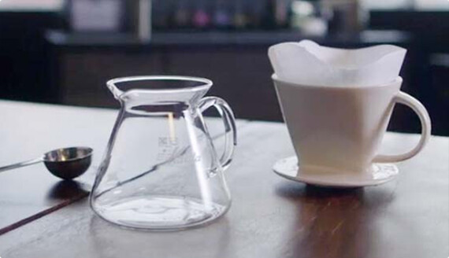
커피를 추출하기 위한 물을 원하는 만큼 계량하여 끓여 주세요.
필터를 린싱할 물도 조금 추가해 주세요.
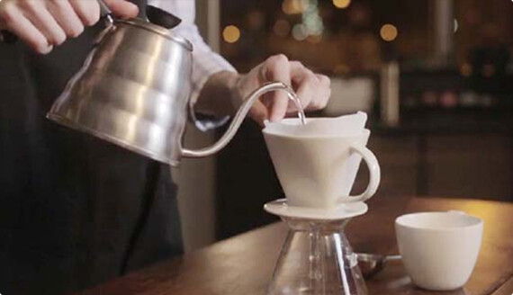
필터를 접어 드리퍼 안에 넣습니다.
소량의 뜨거운 물로 필터를 적시며, 드리퍼와 함께 예열합니다.
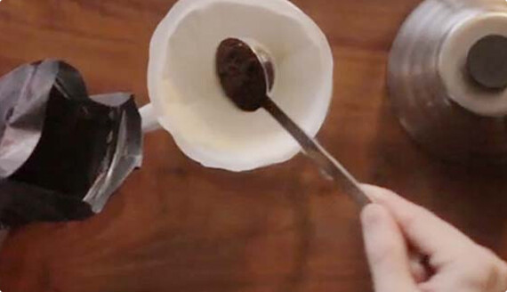
원하는 만큼 커피를 계량합니다. 종이로 된 필터에 그라인딩 된 커피를 넣으세요.
설탕 알갱이 크기의 비교적 곱게 그라인딩 된 커피를 사용합니다.
물 6온스 당 커피 2테이블 스푼을 계량하세요.
먼저 뜨거운 물 소량을 그라인딩 된 커피가 살짝 젖을 정도로 붓습니다.
커피의 풍미가 잘 드러날 수 있도록 10초 정도 기다립니다.
남은 물을 천천히 부어주세요. 그라인딩 된 커피가 전부 젖을 수 있도록 조그만 원을
그리듯 규칙적으로 물을 붓습니다. 그리고 커피를 즐깁니다.
부드럽고 깨끗한 풍미의 푸어 오버 드립 커피를 아이스커피로 산뜻하게 마실 수 있는 간단한 방법입니다.
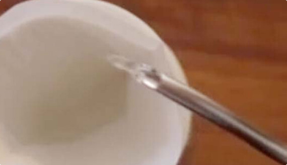
필터를 접어 드리퍼 안에 넣고, 소량의 뜨거운 물로 필터를 적십니다.
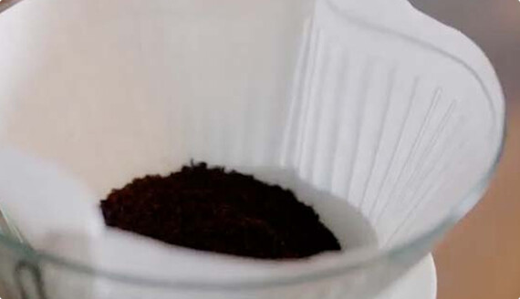
종이 필터에 그라인딩 된 커피를 넣으세요. 설탕 알갱이 크기의 비교적 곱게 그라인딩 된
커피를 사용합니다.
아이스 푸어 오버는 두 배로 진하게 만든 후 얼음을 넣어 희석시킵니다.
뜨거운 물 6온스 당 커피 4테이블 스푼을 계랑하세요.
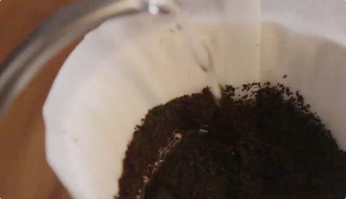
먼저 뜨거운 물 소량을 그라인딩 된 커피가 살짝 젖을 정도로 붓고,
커피의 풍미가 잘 드러날 수 있도록 10초 정도 기다립니다.
커피가 물과 골고루 섞이면서 풍미가 나타나기 시작합니다.
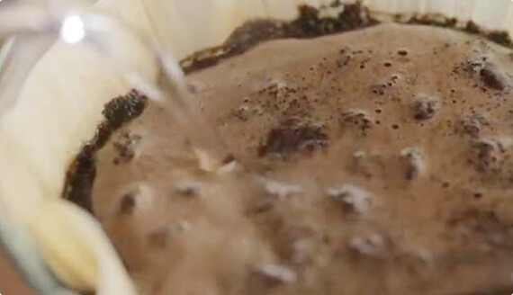
남은 물을 천천히 부어주세요.
그라인딩 된 커피가 전부 젖을 수 있도록 조그만 원을 그리듯 규칙적으로
물을 붓습니다.
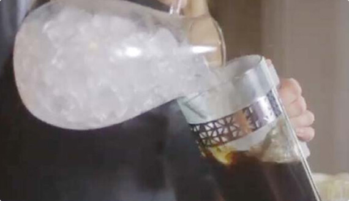
만들어진 커피에 얼음을 넣어 더 차갑고 시원하게 즐기세요.
훌륭한 바디감과 톡쏘는 시트러스 향기를 가진 아프리카 커피는 아이스 푸어 오버로립 커피는 맛있는 커피를 간편하게 만드는 방법입니다. 커피 브루어에 적당히 그라인딩 된 커피와 깨끗한 물을 이용해서 완벽한 커피를 만들 수 있습니다.
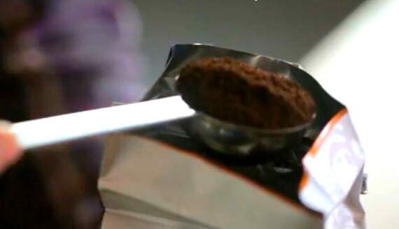
바닥이 평평한 필터의 경우, 바다 소금 정도의 중간 크기로 그라인딩 된 커피를 사용하세요.
콘 형태 필터의 경우, 설탕 알갱이 크기의 곱게 그라인딩 된 커피를 사용하세요.
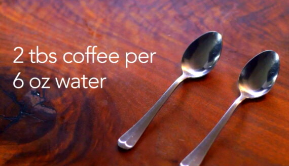
물 6온스 당 신선하게 그라인딩 된 커피 2테이블 스푼을 계랑하세요.
리저브 원두는 동일한 원두도 추출 방식에 따라 커피의 맛과 향이 다르게 추출됩니다.
원하는 원두와 추출 방식을 선택하시면, 숙련된 커피 마스터가 취향을 담은 커피를 추출해 드립니다.